Offline, progressive, and multithreaded
A peek at webapps of the future
@nolanlawson

Progressive web apps!

@nolanlawson

Whence progressive web apps?
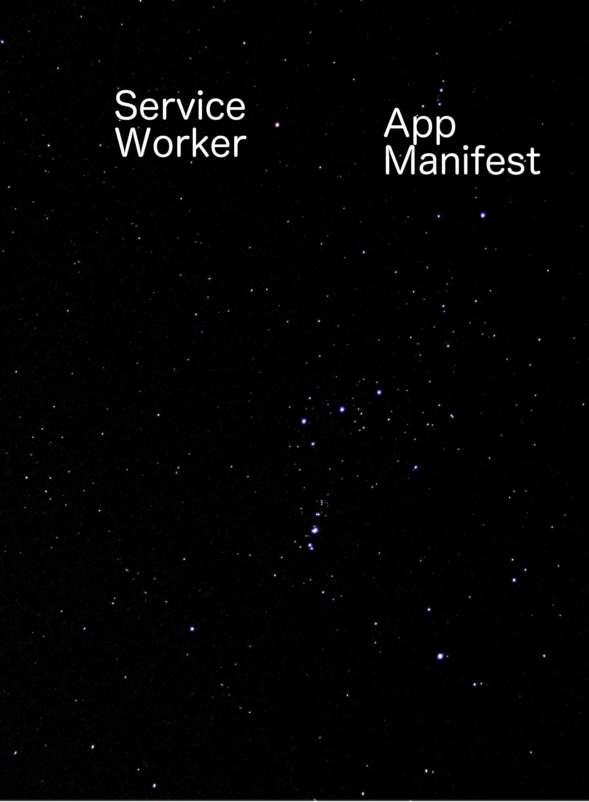
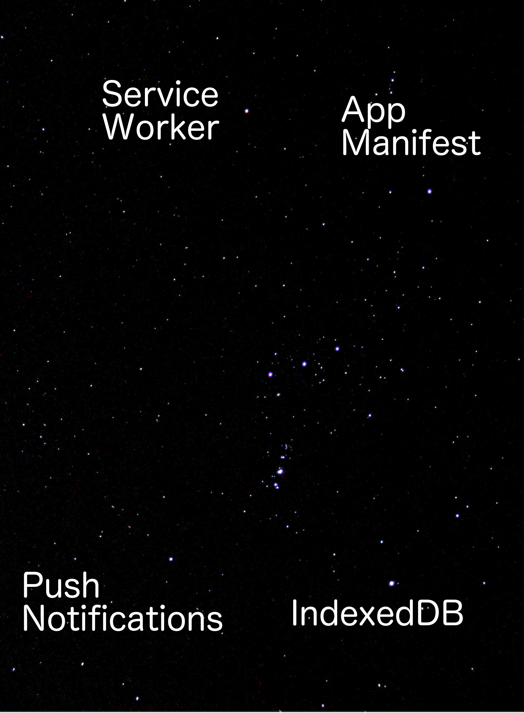
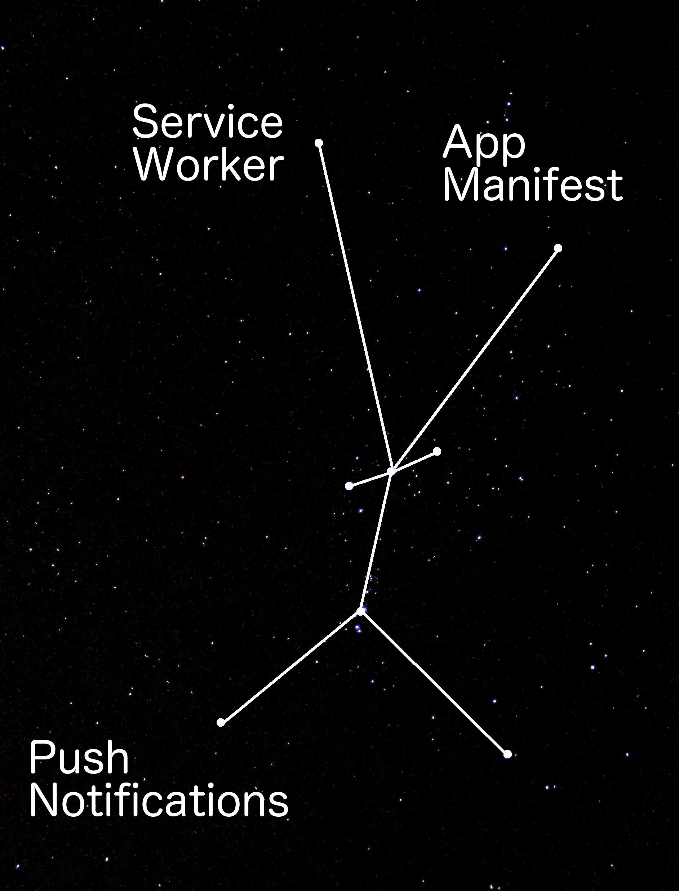
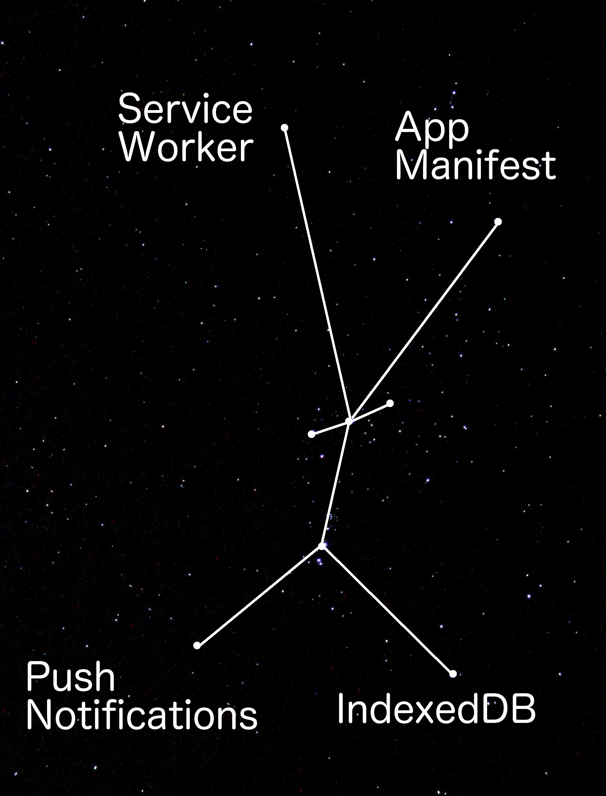
Bruce Lawson on PWAs

HTML [is] in direct competition with other technologies intended for applications deployed over the web, in particular Flash and Silverlight.
– Ian Hickson, 2009 (via Bruce Lawson)


[The web] won on desktop, just in time for mobile to eat the world.
– Alex Russell, 2016
| Native apps | Web apps | PWAs | |
|---|---|---|---|
| 📶 Offline | ✔ | ❌ | ✔ |
| 📈 Progressive | ❌ | ✔ | ✔ |
| 🐙 Multithreaded | ✔ | ❌ | ✔ |
📶 Offline


Offline-first
We live in a disconnected and battery powered world, but our technology and best practices are a leftover from the always connected and steadily powered past.
– offlinefirst.org
"Offline-first"
- Disconnected
- Airplane mode
- Lie-fi
- Conference wifi
- ...negative mental associations
Offline-first is about speed ⚡
 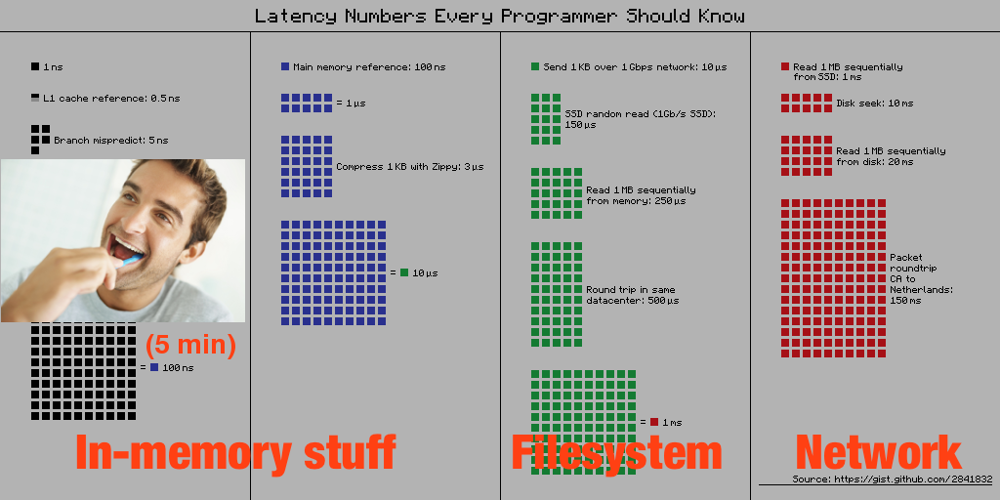
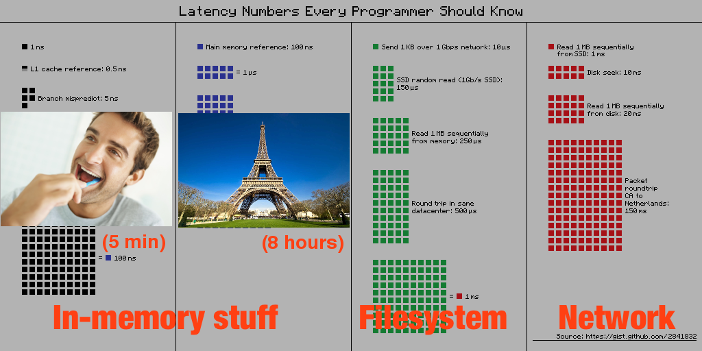
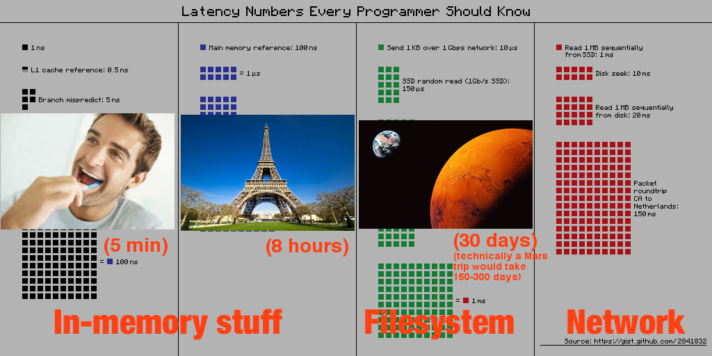
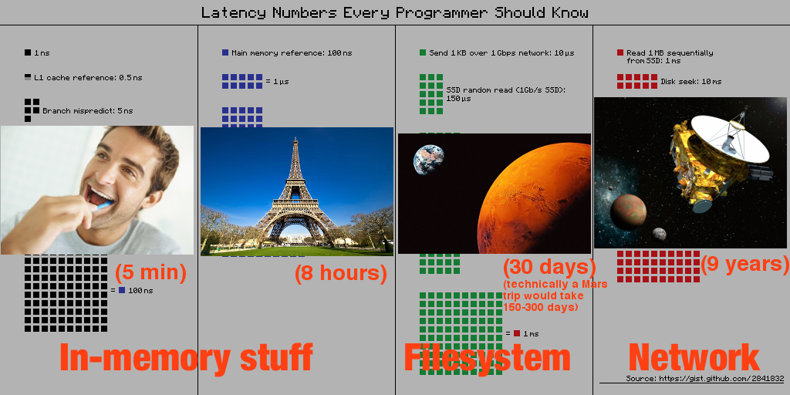
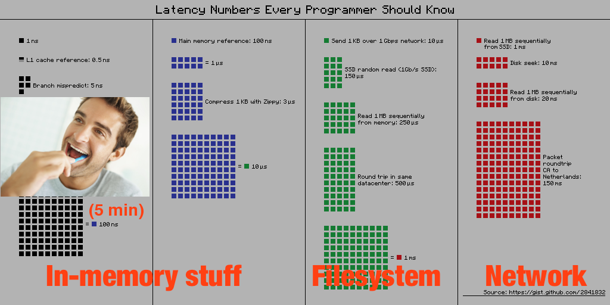
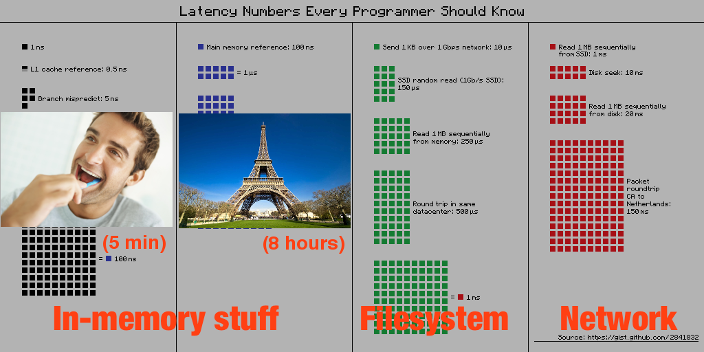
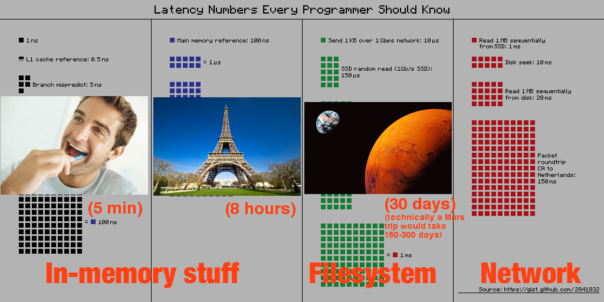
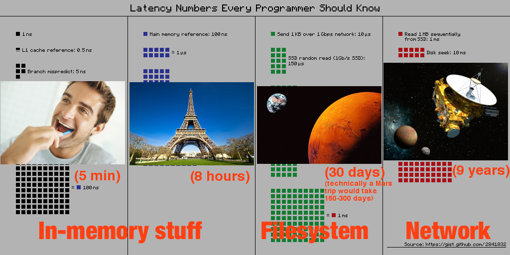
How do we offline?
The web platform has always had two solutions to every problem: the deprecated one you shouldn't use and the one that's not yet ready.
– Sylvain Galineau
| Ye olde way | The hot 🔥 new way | |
|---|---|---|
| Static data | AppCache | Cache API (Service Worker) |
| Dynamic/query data | LocalStorage, WebSQL |
IndexedDB |